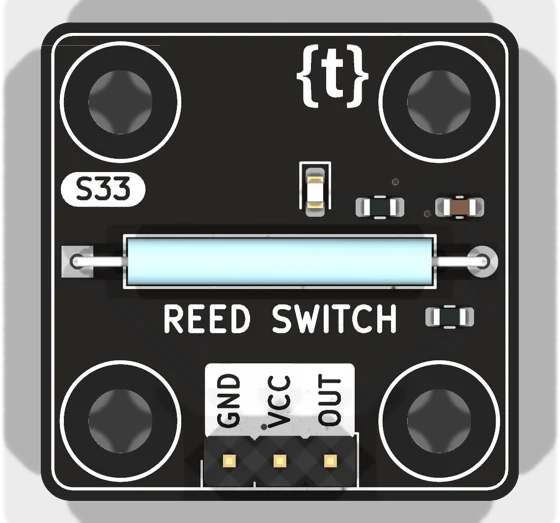
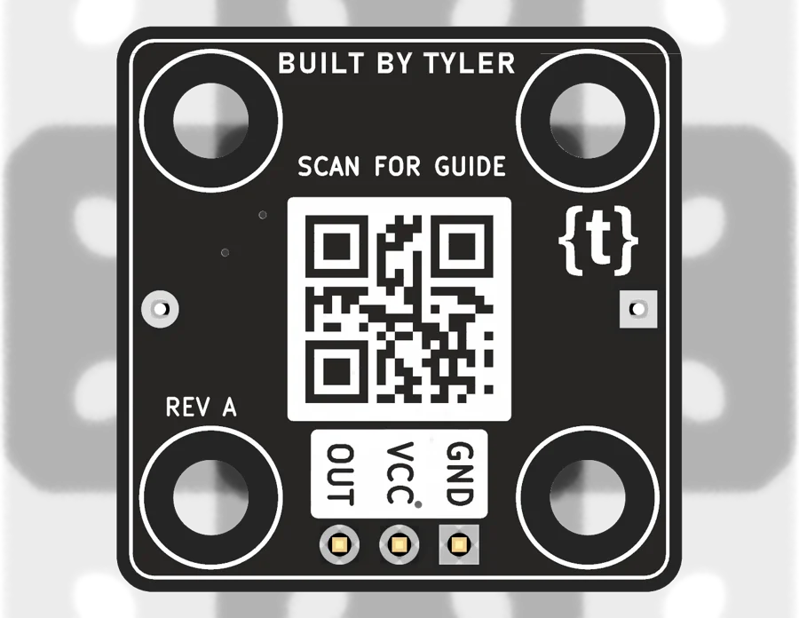

Hardware / Hardware kit / S33


Hardware kit — S33
Reed Switch
A magnet near the glass closes it (OUT HIGH). Door/window sensors, RPM.
- Main part
- Hamlin MDSR-4
- Supply
- 3.3 V or 5 V (use your board's logic voltage)
- Pins
- GND · VCC · OUT
- Board
- 24 x 24 mm, M3 holes on an 8 mm grid
- Try it
- Bring a magnet near the glass
- Libraries
- digitalRead(pin) - HIGH when active (no INPUT_PULLUP needed)
Wire it
| Board | ESP32 | Arduino Uno | Raspberry Pi |
|---|---|---|---|
| GND | GND | GND | GND (pin 6) |
| VCC | 3V3 | 5V | 3V3 (pin 1) |
| OUT | GPIO 4 | D2 | GPIO17 |
Code (Arduino IDE, ESP32)
pinMode(4, INPUT); int v = digitalRead(4); Serial.println(v);
What is better about this one
- Branded reed with a datasheet
- Debounced, pull-down, LED